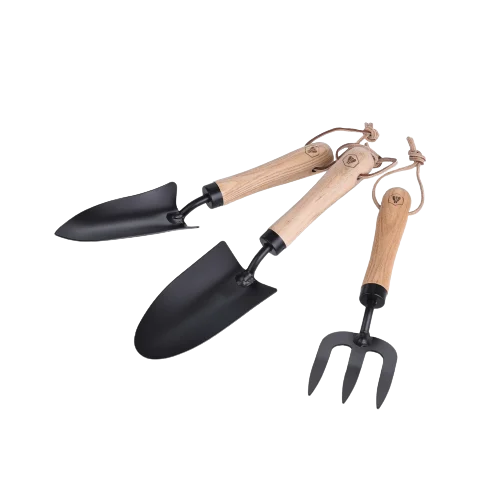

Kits d'outils de jardinage
Description
Ce coffret de 3 outils de jardinage composé d'une truelle à main, une fourche et un transplantoir. Caractéristiques: L'emblème est gravé sur les manches des outils. Ce set est livré dans une jolie boîte en forme de tube. Si vous êtes à la recherche d'une idée de cadeau pour faire plaisir à vos proches, vous avez trouvé le bon produit! Tout amateur de jardinage sera séduit par ce set d'outils de jardinage de haute qualité.
Dimensions: 1 x truelle (32,3x8,4x 6,4cm), 1 x fourche (28,9x 7,74 x 4cm), 1 x transplantoir (32 x 6,7x4,1cm).
Caracteristiques
Réf.: M21035127
Dimensions (cm): H6 x L32 x PR8
Couleur principale : Marron
Matière principale : Bois
Infos complementaires
Entretien : Laver à la main
Collection du produit : JARDIN
Couleur marketing : Marron clair